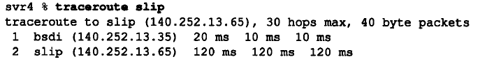
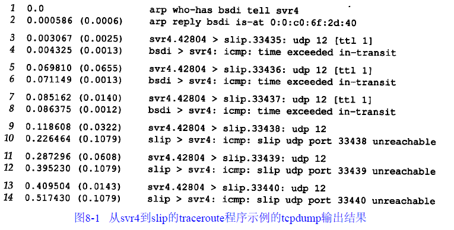
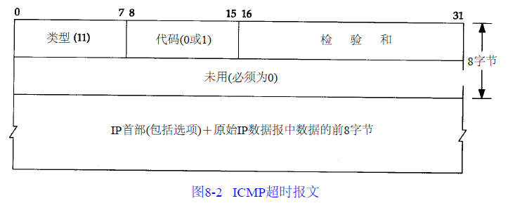
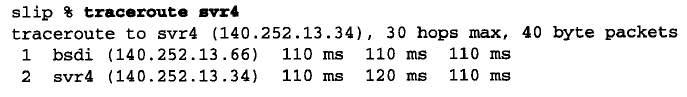
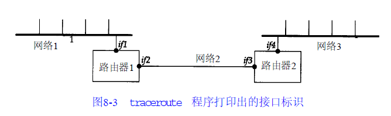
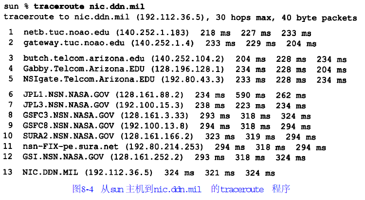
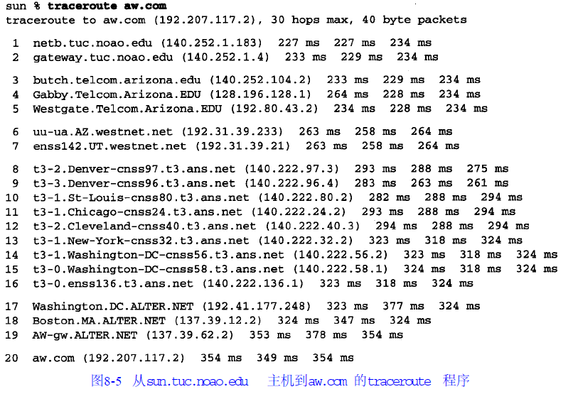

Traceroute程序
Traceroute程序是一个能更深入探索TCP/IP协议的方便可用的工具
尽管不能保证从源端发往目的端的两份连续的IP数据报具有相同的路由，但是大多数情况下是这样的。Traceroute程序可以让我们看到IP数据报从一台主机传到另一台主机所经过的路由
原理
TTL字段
Traceroute程序使用ICMP报文和IP首部中的TTL字段（生存周期）。TTL字段是由发送端初始设置一个8bit字段。推荐的初始值由分配数字RFC指定，当前值为64。较老版本的系统经常初始化为15或32。从一些ping程序例子中可以看出，发送ICMP回显应答时经常把TTL设为最大值255
每个处理数据报的路由器都需要把TTL的值减1或减去数据报在路由器中停留的秒数。由于大多数的路由器转发数据报的时延都小于1秒钟，因此TTL最终成为一个跳站的计数器，所经过的每个路由器都将其值减1
RFC 1009指出，如果路由器转发数据报的时延超过1秒，那么它将把TTL值减去所消耗的时间（秒数）。但很少有路由器这么实现。新的路由器需求文档RFC为此指定它为可选择功能，允许把TTL看成一个跳站计数器
TTL字段的目的是防止数据报在选路时无休止地在网络中流动。例如，当路由器瘫痪或者两个路由器之间的连接丢失时，选路协议有时会去检测丢失的路由并一直进行下去。在这段时间内，数据报可能在循环回路被终止。TTL字段就是在这些循环传递的数据报上加上一个生存上限
当路由器收到一份IP数据报，如果其TTL字段是0或1，则路由器不转发该数据报（接收到这种数据报的目的主机可以将它交给应用程序，这是因为不需要转发该数据报。但是在通常情况下，系统不应该接收TTL字段为0的数据报）。相反，路由器将该数据报丢弃，并给信源机发一份ICMP“超时”信息。Traceroute程序的关键在于包含这份ICMP信息的IP报文的信源地址是该路由器的IP地址
过程
Traceroute程序的操作过程：它发送一份TTL字段为1的IP数据报给目的主机。处理这份数据报的第一个路由器将TTL值减1，丢弃该数据报，并发回一份超时ICMP报文。这样就得到了该路径中的第一个路由器的地址。然后Traceroute程序发送一份TTL值为2的数据报，这样我们就可以得到第二个路由器的地址。继续这个过程直至该数据报到达目的主机。但是目的主机哪怕接收到TTL值为1的IP数据报，也不会丢弃该数据报并产生一份超时ICMP报文，这是因为数据报已经到达其最终目的地。那么该如何判断是否已经到达目的主机了呢？
Traceroute程序发送一份UDP数据报给目的主机，但它选择一个不可能的值作为UDP端口号（大于30000），使目的主机的任何一个应用程序都不可能使用该端口。因为，当该数据报到达时，将使目的主机的UDP模块产生一份“端口不可达”错误的ICMP报文
Traceroute程序所要做的就是区分接收到的ICMP报文是超时还是端口不可达，以判断什么时候结束
Traceroute程序必须可以为发送的数据报设置TTL字段。并非所有与TCP/IP接口的程序都支持这项功能，同时并非所有的实现都支持这项能力，但目前大部分系统都支持这项功能，并可以运行Traceroute程序。这个程序界面通常要求用户具有超级用户权限，这意味着它可能需要特殊的权限以在主机上运行该程序
示例
局域网
从svr4到slip，经路由器bsdi的简单互联网。bsdi和slip之间是9600b/s的SLIP链路：

- 第1个无标号行给出了目的主机名和其IP地址，指出traceroute程序最大的TTL字段值为30。40字节的数据报包含20字节IP首部、8字节的UDP首部和12字节的用户数据（12字节的用户数据包含每发一个数据报就加1的序列号，送出TTL的副本以及发送数据报的时间）
- 输出的后面两行以TTL开始，接下来是主机或路由器名以及其IP地址。对于每个TTL值，发送3份数据报。每接收到一份ICMP报文，就计算并打印出往返时间。如果在5秒种内仍未收到3份数据报的任意一份的响应，则打印一个星号，并发送下一份数据报。在上述输出结果中，TTL字段为1的前3份数据报的ICMP报文分别在20ms、10ms和10ms收到。TTL字段为2的3份数据报的ICMP报文则在120ms后收到。由于TTL字段为2到达最终目的主机，因此程序就此停止
- 往返时间是由发送主机的traceroute程序计算的。它是指从traceroute程序到该路由器的总往返时间。如果对每段路径的时间感兴趣，可以用TTL字段为N+1所打印出来的时间减去TTL字段为N的时间
tcpdump输出
下图给出了tcpdump的运行输出结果：

- 第1个发往bsdi的探测数据报的往返时间是20ms，而后面两个数据报往返时间是10ms的原因是发生了一次ARP交换
- 目的主机UDP端口号最开始设置为33435，且每发送一个数据报加1。可以通过命令行选项来改变开始的端口号。UDP数据报包含12个字节的用户数据
tcpdump打印出了TTL字段为1的IP数据报。当TTL值为0或1时，tcpdump打印出这条信息，以提示我们数据报中有些不太寻常之处。在这里可以预见到TTL值为1；而在其他一些应用程序中，它可以警告我们数据报可能无法到达其最终目的主机。我们不可能看到路由器传送一个TTL值为0的数据报，除非发出该数据报的该路由器已经崩溃
因为bsdi路由器将TTL值减到0，因此它将发回“传送超时”的ICMP报文。即使这份被丢弃的IP报文发送往slip，路由器也会发回ICMP报文
有两种不同的ICMP“超时”报文，它们的ICMP报文中code字段不同。下图给出了这种ICMP差错报文的格式：

ICMP报文是在TTL值等于0时产生的，其code字段为0。主机在组装分片时可能发生超时，这时，它将发送一份“组装报文超时”的ICMP报文。这种差错报文将code字段置1
图8-1的第9~14行对应于TTL为2的3份数据报。这3份报文到达最终目的主机，并产生一份ICMP端口不可达报文
还有一些必须指出的事项：
- 并不能保证现在的路由也是将来所要采用的路由，甚至两份连续的IP数据报都可能采用不同的路由。如果在运行程序时，路由发生改变，就会观察到这种变化，这是因为对于一个给定的TTL，如果其路由发生变化，traceroute程序将打印出新的IP地址
- 不能保证ICMP报文的路由与traceroute程序发送的UDP数据报采用同一路由。这表明所打印出来的往返时间可能并不能真正体现数据报发出和返回的时间差（如果UDP数据报从信源到路由器的时间是1秒，而ICMP报文用另一条路由返回信源用了3秒时间，则打印出来的往返时间是4秒
- 返回的ICMP报文中的信源IP地址是UDP数据报到达的路由器接口的IP地址。这与IP记录路由选项不同，记录的IP地址指的是发送接口地址。由于每个定义的路由器都有2个或更多的接口，因此，从A主机到B主机上运行traceroute程序和从B主机到A主机上运行traceroute程序所得到的结果可能是不同的。事实上，如果我们从slip主机到svr4上运行traceroute程序，其输出结果变成了：

这次打印出来的bsdi主机的IP地址是140.252.13.66，对应于SLIP接口；而上次的地址是140.252.13.35，是以太网接口地址。由于traceroute程序同时也打印出与IP地址相关的主机名，因而主机名也可能变化

如果我们在左边LAN的一个主机上运行traceroute程序，那么它将发现路由器的IP地址为if1和if3。但在另一种情况下，就会发现打印出来的IP地址为if4和if2。if2和if3有着同样的网络号，而另两个接口则有着不同的网络号
广域网
下图是从sun主机到NIC的情况：

- 一旦数据报离开tuc.noao.edu网，就进入了telcom.arizona.edu网络。然后这些数据报进入NASA Science Internet，nsn.nasa.gov。TTL字段为6和7的路由器位于JPL(Jet Propulsion Laboratory)上。TTL字段为11所输出的sura.net网络位于Southeastern Universities Research Association Network上。TTL字段为12的域名GSI是Government Systems, Inc., NIC的运营者
- TTL字段为6的第2个RTT（590）几乎是其他两个RTT值（234和262）的两倍。它表明IP路由的动态变化。在发送主机和这个路由器之间发生了使该数据报速度变慢的事件。同样，我们不能区分是发出的数据报还是返回的ICMP差错报文被拦截
- TTL字段为3的第1个RTT探测值（204）比TTL字段为2的第1个探测值（233）值还小。由于每个打印出来的RTT值是从发送主机到路由器的总时间，因此这种情况是可能发生的
下图是从sun主机到aw出版社之间的运行例子：

数据报离开telcom.arizona.edu网络后就进行了地区性的网络westnet.net(TTL字段值为6和7 )。然后进行了由Advanced Network & Services 运营的NSFNET主干网， t3.ans.net，（T3是对于主干网采用的45Mb/s电话线的一般缩写），最后的网络是alter.net，即aw.com与互联网的连接点